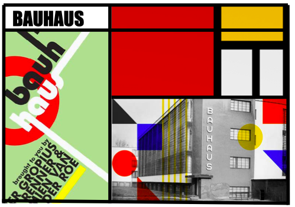
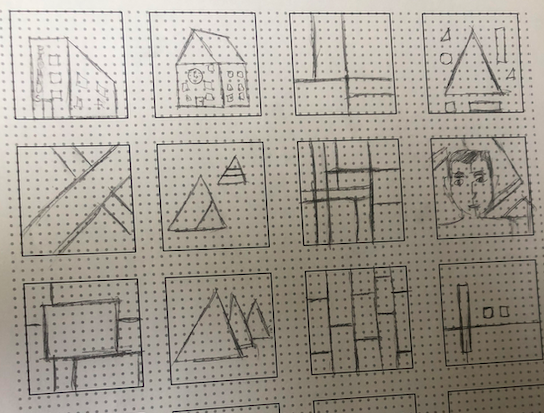
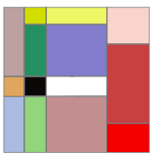
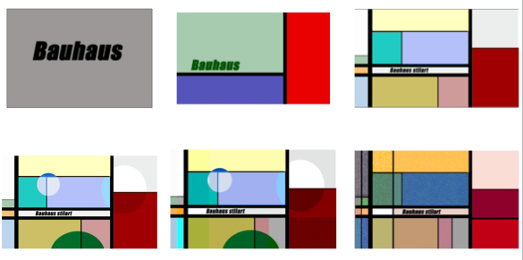

Det første tema på KEA som multimediedesigner, er grundlæggende web. Her bliver man introduceret for design af digitale brugergrænseflader, digital indholdsproduktion, digital kommunikation og responsivt design. Vi lærte det grundlæggende inden for kodning, hvilket består af html og css i Brackets, og derudover blev vi introduceret til billedbehandling i Photoshop, samt opsætning af tekst og billeder i Adobe XD. Vi lærte også om alt forabrjedet til billedbehandling, og hjemmeside, såsom skitsering, Moodboard, wireframes, mock-up og styletile, samt grundlæggende viden om layout og komposition. Jeg har fået utrolig mange værktøjer med fra dette tema, som er virkelig vigtige at have som kommende multimediedesigner. På siden her, kan du se mit projekt om Bauhause stilart, hvilket er udformet i et responsivt site, og herudover kan du se eksempler på forarbejde, og andre øvelser vi har skulle lave.
Mit responsive site, tager udgangspunkt i stilarten Bauhause. Stilarten stammer fra en tysk designskole, som eksidterede tilbage i 1919-1933. Bauhause stilart øsnkede at gøre op med et ideal om at design og arkitektur skullle være overpyntede facader, og ville i stedet sætte fokus på funktion, billigt materiale og det industrielle. Denne stil har jeg bestræbet mig på at skulle komme til udtryk via mit responsive site.
Til højre ses mit udarbejdede moodboard, som tager udgangspunkt i Bauhause stilart. Dette blev lavet inden jeg gik igang med sitet, så jeg havde en idé om hvilket stil jeg synes skulle være gennemgående.
Til højre ses mine skitser af hvordan et favicon kunne se ud til mit responsive site om Bauhause. Derudover ses det færdige favicon også.
 Her ses min eksekvering af splashbillede til stilartsitet. Dette blev udarbejdet i Photoshop.
